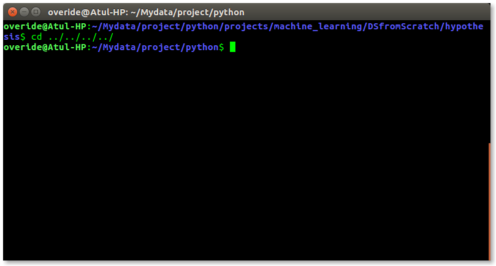
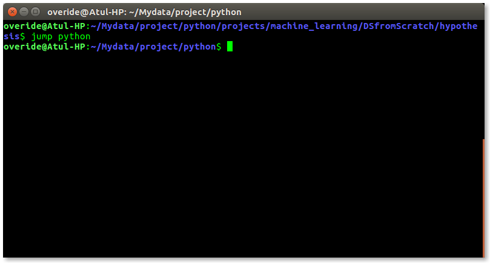

If you are using any major operating system you are indirectly interacting to shell. If you are running Ubuntu, Linux Mint or any other Linux distribution, you are interacting to shell every time you use terminal. In this article I will discuss about linux shells and shell scripting so before understanding shell scripting we have to get familiar with following terminologies –
- Kernel
- Shell
- Terminal
- File management
- Process management
- I/O management
- Memory management
- Device management etc.
- Command Line Shell
- Graphical shell
- BASH (Bourne Again SHell) – It is most widely used shell in Linux systems. It is used as default login shell in Linux systems and in macOS. It can also be installed on Windows OS.
- CSH (C SHell) – The C shell’s syntax and usage are very similar to the C programming language.
- KSH (Korn SHell) – The Korn Shell also was the base for the POSIX Shell standard specifications etc.
- Shell Keywords – if, else, break etc.
- Shell commands – cd, ls, echo, pwd, touch etc.
- Functions
- Control flow – if..then..else, case and shell loops etc.
- To avoid repetitive work and automation
- System admins use shell scripting for routine backups
- System monitoring
- Adding new functionality to the shell etc.
- The command and syntax are exactly the same as those directly entered in command line, so programmer do not need to switch to entirely different syntax
- Writing shell scripts are much quicker
- Quick start
- Interactive debugging etc.
- Prone to costly errors, a single mistake can change the command which might be harmful
- Slow execution speed
- Design flaws within the language syntax or implementation
- Not well suited for large and complex task
- Provide minimal data structure unlike other scripting languages. etc
What is Kernel
The kernel is a computer program that is the core of a computer’s operating system, with complete control over everything in the system. It manages following resources of the Linux system –
-
It is often mistaken that Linus Torvalds has developed Linux OS, but actually he is only responsible for development of Linux kernel.
Complete Linux system = Kernel + GNU system utilities and libraries + other management scripts + installation scripts.
What is Shell
A shell is special user program which provide an interface to user to use operating system services. Shell accept human readable commands from user and convert them into something which kernel can understand. It is a command language interpreter that execute commands read from input devices such as keyboards or from files. The shell gets started when the user logs in or start the terminal.

linux shell
Shell is broadly classified into two categories –
Command Line Shell
Shell can be accessed by user using a command line interface. A special program called Terminal in linux/macOS or Command Prompt in Windows OS is provided to type in the human readable commands such as “cat”, “ls” etc. and then it is being execute. The result is then displayed on the terminal to the user. A terminal in Ubuntu 16.4 system looks like this –
linux command line
In above screenshot “ls” command with “-l” option is executed.
It will list all the files in current working directory in long listing format.
Working with command line shell is bit difficult for the beginners because it’s hard to memorize so many commands. It is very powerful, it allows user to store commands in a file and execute them together. This way any repetitive task can be easily automated. These files are usually called batch files in Windows and Shell Scripts in Linux/macOS systems.
Graphical Shells
Graphical shells provide means for manipulating programs based on graphical user interface (GUI), by allowing for operations such as opening, closing, moving and resizing windows, as well as switching focus between windows. Window OS or Ubuntu OS can be considered as good example which provide GUI to user for interacting with program. User do not need to type in command for every actions.A typical GUI in Ubuntu system –
GUI shell
There are several shells are available for Linux systems like –
Each shell does the same job but understand different commands and provide different built in functions.
Shell Scripting
Usually shells are interactive that mean, they accept command as input from users and execute them. However some time we want to execute a bunch of commands routinely, so we have type in all commands each time in terminal.
As shell can also take commands as input from file we can write these commands in a file and can execute them in shell to avoid this repetitive work. These files are called Shell Scripts or Shell Programs. Shell scripts are similar to the batch file in MS-DOS. Each shell script is saved with .sh file extension eg. myscript.sh
A shell script have syntax just like any other programming language. If you have any prior experience with any programming language like Python, C/C++ etc. it would be very easy to get started with it.
A shell script comprises following elements –
Why do we need shell scripts
There are many reasons to write shell scripts –
Advantages of shell scripts
Disadvantages of shell scripts
Simple demo of shell scripting using Bash Shell
If you work on terminal, something you traverse deep down in directories. Then for coming few directories up in path we have to execute command like this as shown below to get to the “python” directory –

It is quite frustrating, so why not we can have a utility where we just have to type the name of directory and we can directly jump to that without executing “cd ../” command again and again. Save the script as “jump.sh”
# !/bin/bash
# A simple bash script to move up to desired directory level directly
function jump()
{
# original value of Internal Field Separator
OLDIFS=$IFS
# setting field separator to "/"
IFS=/
# converting working path into array of directories in path
# eg. /my/path/is/like/this
# into [, my, path, is, like, this]
path_arr=($PWD)
# setting IFS to original value
IFS=$OLDIFS
local pos=-1
# ${path_arr[@]} gives all the values in path_arr
for dir in "${path_arr[@]}"
do
# find the number of directories to move up to
# reach at target directory
pos=$[$pos+1]
if [ "$1" = "$dir" ];then
# length of the path_arr
dir_in_path=${#path_arr[@]}
#current working directory
cwd=$PWD
limit=$[$dir_in_path-$pos-1]
for ((i=0; i<limit; i++))
do
cwd=$cwd/..
done
cd $cwd
break
fi
done
}
For now we cannot execute our shell script because it do not have permissions. We have to make it executable by typing following command –
$ chmod -x path/to/our/file/jump.sh
Now to make this available on every terminal session, we have to put this in “.bashrc” file.
“.bashrc” is a shell script that Bash shell runs whenever it is started interactively. The purpose of a .bashrc file is to provide a place where you can set up variables, functions and aliases, define our prompt and define other settings that we want to use whenever we open a new terminal window.
Now open terminal and type following command –
$ echo “source ~/path/to/our/file/jump.sh”>> ~/.bashrc
Now open you terminal and try out new “jump” functionality by typing following command-
$ jump dir_name
just like below screenshot –

Resources for learning Bash Scripting
References